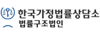

대인관계
마음을 나누고 시간을 함께 보낼 분이 주변에 계신가요?
우리의 일상은 늘 누군가와의 관계 속에서 이루어지고, 이들 관계 속에서 기쁨, 슬픔, 행복 등의 감정을 느끼며 우리는 삶을 충만하게 가꾸어가고 있습니다.
이처럼 대인관계는 개인의 행복에 미치는 영향이 매우 큰 요소이지만 어려움을 호소하는 분들도 많이 있습니다.
대인관계가 어려운 이유는 단순히 한 가지 이유가 아니라 대부분 복합적인 이유이기 때문에 꾸준한 점검과 노력이 필요합니다.
특히 노년기에는 젊은 시절에 비해 주변 사람들의 물리적, 정서적 지원이 더 많이 필요함에도 불구하고 사회활동의 축소에 따라 대인관계도 같이 줄어들 위험이 큽니다.
따라서 노년기에는 배우자, 자녀, 형제자매, 친구, 이웃 등과의 친밀하고 다양한 관계가 더욱 중요해지는 시기입니다.
현재 친밀하고 다양한 대인관계를 맺고 있다면 관계를 앞으로도 잘 유지할 수 있도록 노력하고, 그렇지 않다면 새로운 활동을 시작하거나 소통, 갈등관리 등에 대한 개선노력이 필요합니다.
-
대인관계 정보
서울시 50플러스
서울시 50플러스 캠퍼스 및 센터를 기반으로 상담 – 교육 – 활동을 연계함으로써 50+세대의 사회적 관계 맺기를 지원하는 서비스입니다.
- 문의처 : 서울시 50+ 상담센터(☎02-460-5050)
- 신청방법 : 인터넷
- 제공유형 : 정보 제공 등
-
 대인관계 상담
대인관계 상담가족정책서비스
지역주민의 특성을 고려한 맞춤형 가족지원서비스를 제공하여 가족의 안정성을 강화시키고 가족관계를 증진시키는 사업입니다.
- 문의처 : 건강가정지원센터 대표전화(☎1577-9337)
- 신청방법 : 방문, 유선
- 제공유형 : 상담 등
-
 대인관계 상담
대인관계 상담법률복지서비스(법률구조공단)
경제적으로 어렵거나 법을 잘 몰라서 법의 보호를 충분히 받지 못하는 분들에게 법률 상담 및 지원 서비스를 제공해드립니다.
- 문의처 : 대한법률구조공단 콜센터(☎132)
- 신청방법 : 인터넷
- 제공유형 : 상담 등
-
 대인관계 서비스
대인관계 서비스통합사례관리
자활하고자 하는 가구에게 맞춤형 서비스를 제공하여 안정적인 삶을 지지하는 서비스입니다.
- 문의처 : 보건복지 콜센터(☎129)
- 신청방법 : 방문
- 제공유형 : 서비스
-

대인관계 상담법률복지서비스(한국가정법률상담소)
전 국민에게 가사 전문상담위원 및 변호사와의 무료법률 상담을 제공하고, 법을 잘 모르고 경제적으로 어려워 직접 소송할 수 없는 경우 무료 소송을 지원합니다.
- 문의처 : 한국가정법률상담소(☎1644-7077)
- 신청방법 : 유선, 온라인
- 제공유형 : 상담 등
-
 대인관계 상담
대인관계 상담가정폭력피해자 치료회복 프로그램
가정폭력 피해자의 후유증을 최소화하기 위한 치유 및 심신 회복 지원 서비스입니다.
- 문의처 : 여성긴급전화(☎1366)
- 신청방법 : 방문, 유선
- 제공유형 : 상담
-
 대인관계 서비스
대인관계 서비스한부모가족복지시설 지원
저소득 무주택 한부모가족의 경제적 부담을 덜어주고 안정적인 환경에서 자녀를 양육할 수 있도록 지원하는 서비스입니다.
- 문의처 : 관할 주민센터, 시군구청
- 신청방법 : 방문
- 제공유형 : 서비스
-
 대인관계 서비스
대인관계 서비스결혼이민자 통번역 서비스
입국초기의 결혼이민자와 다문화가족이 생활 속에서 의사소통에 불편함이 없도록 통역과 번역 서비스를 지원하여 자립을 돕는 서비스입니다.
- 문의처 : 다누리콜센터(☎1577-1366)
- 신청방법 : 방문, 유선, 홈페이지
- 제공유형 : 서비스
-
대인관계 서비스
1인가구 사회적 관계망 형성 지원
최근 늘어나는 1인 가구의 고독·고립 등을 방지하고 안전하고 건강한 생활을 지원합니다.
- 문의처 : 여성가족부 가족정책과(☎02-2100-6326)
- 신청방법 : 방문, 유선
- 제공유형 : 서비스
-
대인관계 서비스
다함께 돌봄사업
지역 중심의 맞춤형 돌봄 서비스를 제공하여 돌봄사각지대를 해소하고 맞벌이 가구 등의 육아부담을 경감하는 사업입니다.
- 문의처 : 보건복지상담센터(☎129)
- 신청방법 : 유선, 홈페이지
- 제공유형 : 서비스
-
대인관계 서비스
노인보호전문기관
정신적, 신체적, 경제적으로 학대받고 있는 노인을 보호하기 위하여 일시보호, 법률지원, 전문상담 등의 서비스를 제공합니다.
- 문의처 : 노인보호전문기관(☎1577-1389)
- 신청방법 : 방문, 유선
- 제공유형 : 서비스
-
대인관계 상담
발달장애인 부모상담지원사업
발달장애인 부모에게 발달장애인 양육과 부양에 따른 심리적 부담 완화 및 가족기능 향상 도모를 위한 전문심리 상담을 지원합니다.
- 문의처 : 보건복지상담센터(☎129)
- 신청방법 : 방문
- 제공유형 : 상담
-
 대인관계 상담
대인관계 상담청소년 통합지원체계
위기청소년이 가정, 학교 및 사회로 안전하게 돌아갈 수 있도록 상담·보호·교육·자립 등 맞춤형 서비스를 제공합니다.
- 문의처 : 청소년사이버상담센터 (☎1388)
- 신청방법 : 방문, 유선, 문자
- 제공유형 : 상담
-

건강가정지원센터
가족상담, 가족교육, 가족친화문화조성, 가족돌봄 등의 정보를 제공합니다.
-

한국가정법률상담소
가정문제 관련 상담, 교육 등의 정보를 제공합니다.
-
서울시어르신상담센터
상담, 교육 등 건강한 노후생활을 지원하는 서비스를 제공합니다.
-

서울가정문제상담소
부부갈등, 가족갈등 등 가정문제와 관련한 상담과 교육프로그램을 제공합니다.
-
한국학습능력개발원
상황별, 연령별 심리검사 서비스를 제공합니다.
-

다문화가족지원센터
다문화가정의 생활정보, 교육정보, 취업정보 등을 제공합니다.